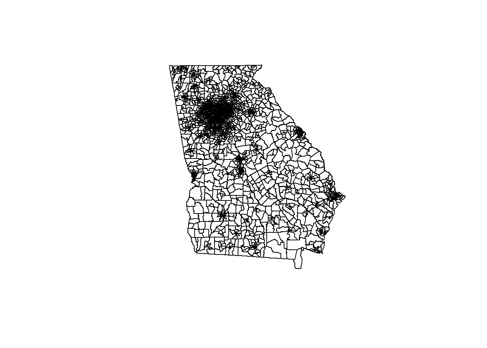
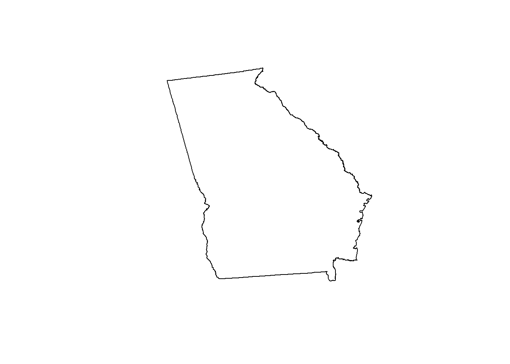
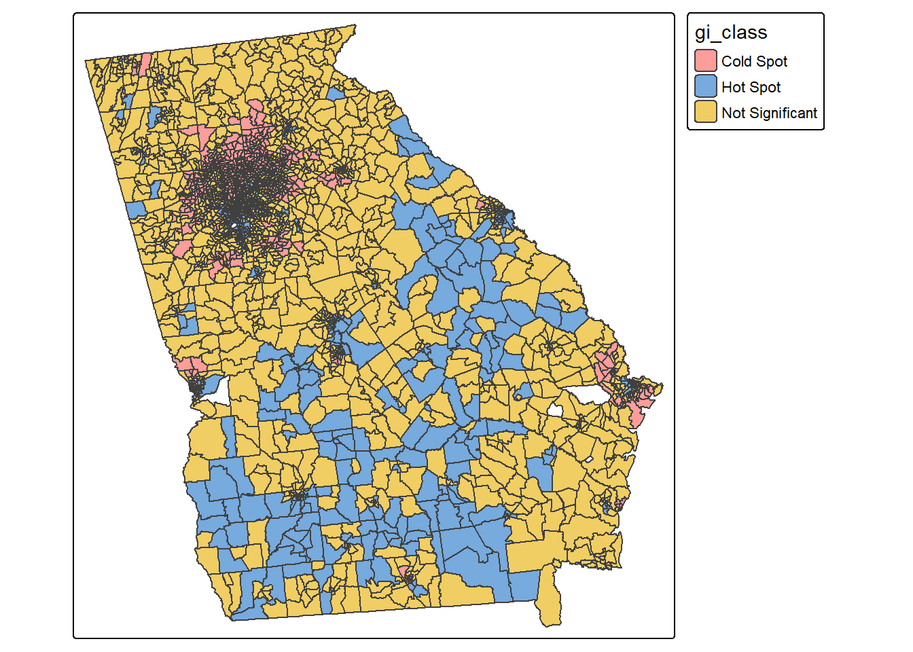
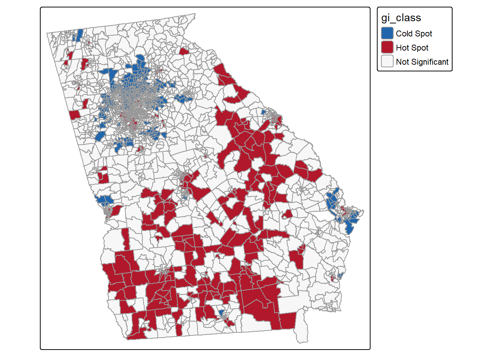
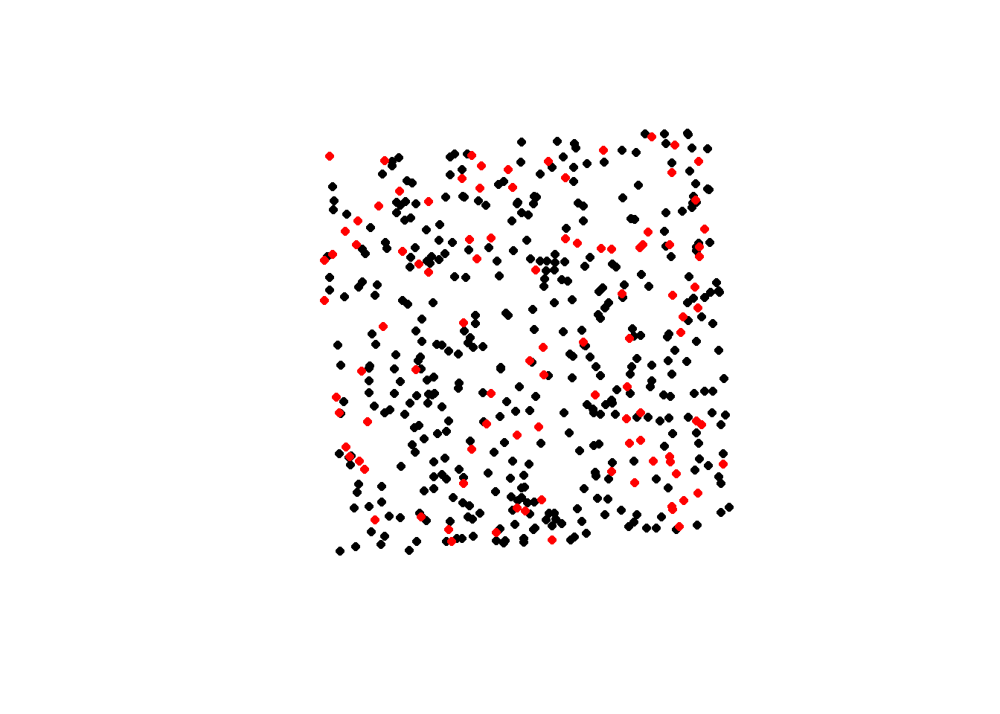
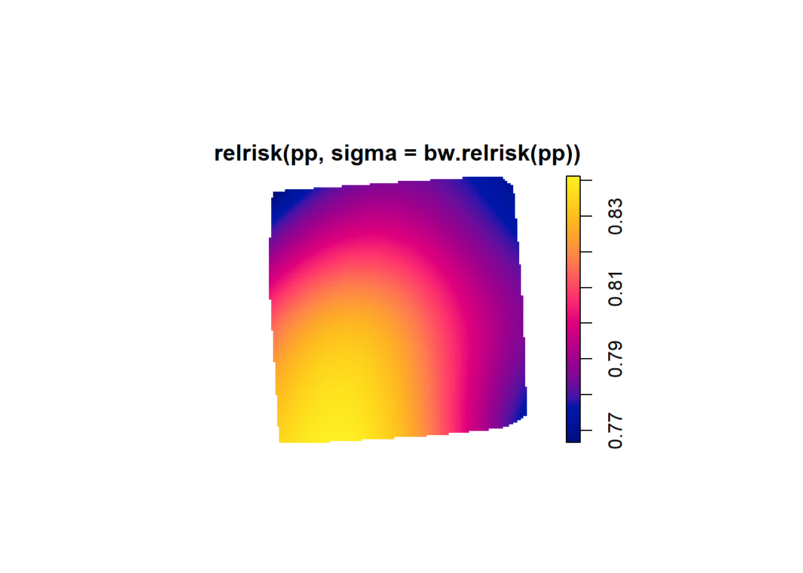
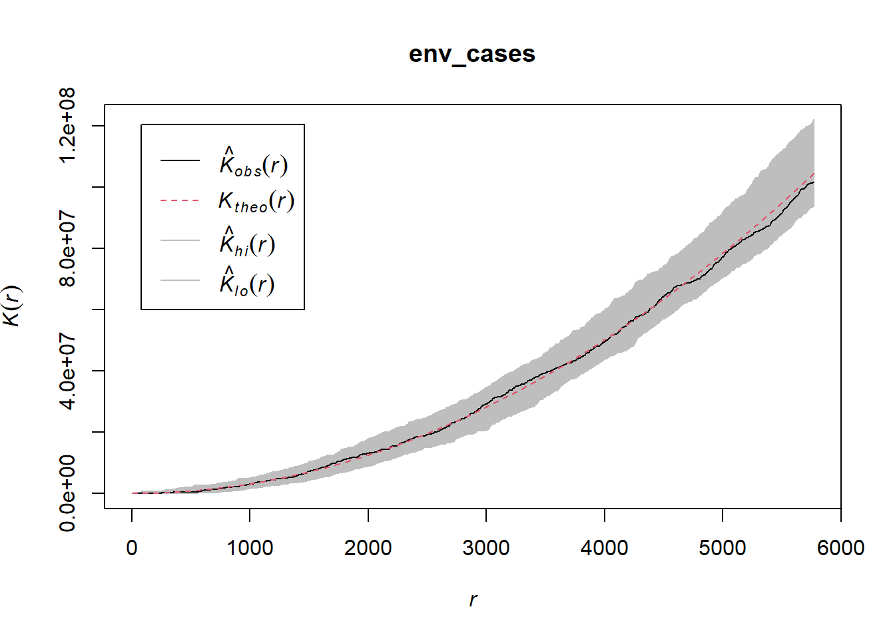
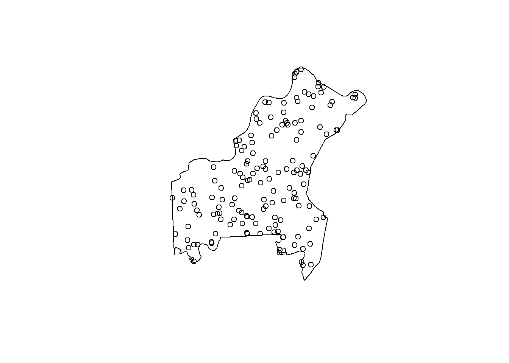
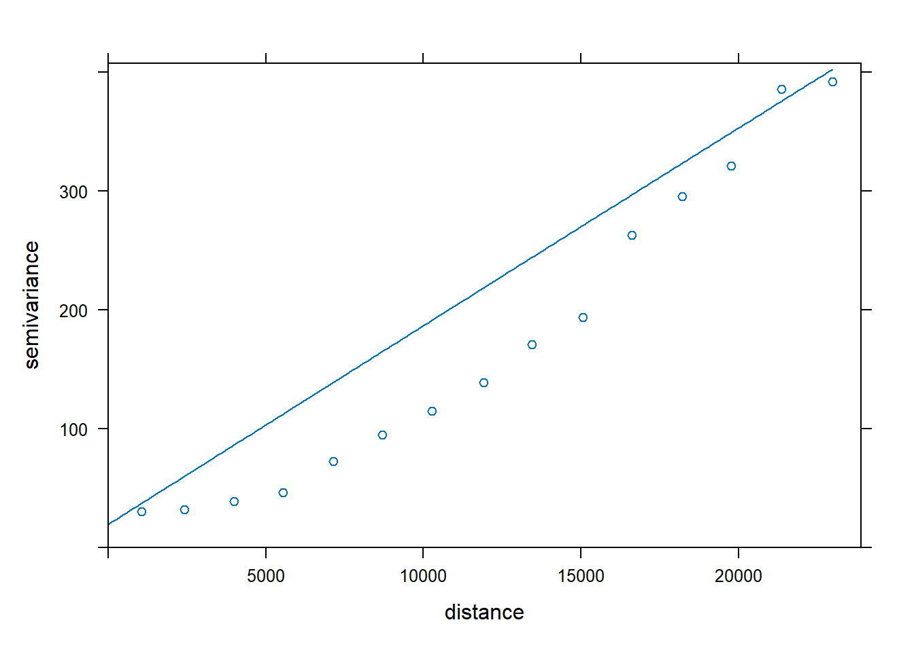
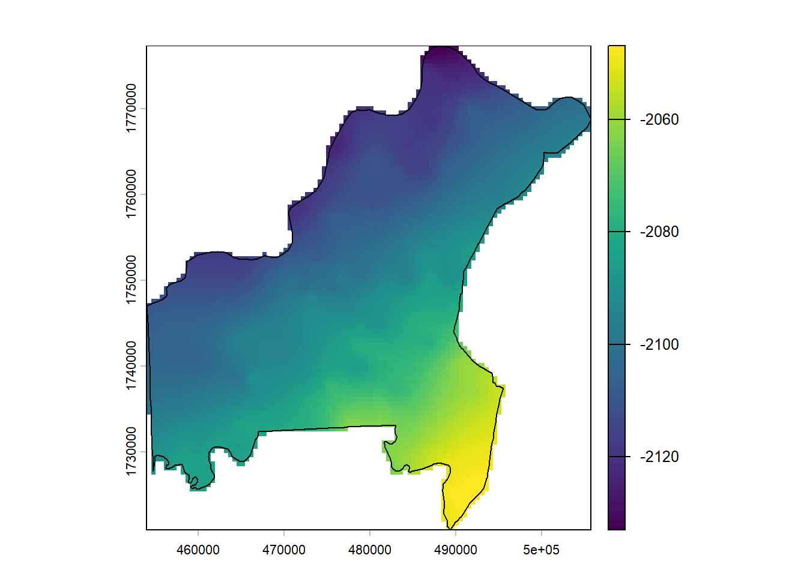

library(tigris)
library(sf)
library(readr)
library(tidyverse)
library(spdep)
library(tmap)
library(spatstat)
library(terra)
library(gstat)Spatial Analysis using R
Content and Structure
This tutorial is structured according to data type and typical research questions, relevant to spatial analysis. All data used in this tutorial is is publicly available or randomly generated and for training purposes only.
Polygons
Rather than import polygon data, we can use the tigris package and download polygon data. Let’s download census tracts in the state of Georgia from 2024.
ga_tracts <- tracts(state="GA", year=2024, cb=TRUE)Once, downloaded we can plot the polygons…
plot(ga_tracts$geometry)
and check the crs…
st_crs(ga_tracts)Coordinate Reference System:
User input: NAD83
wkt:
GEOGCRS["NAD83",
DATUM["North American Datum 1983",
ELLIPSOID["GRS 1980",6378137,298.257222101,
LENGTHUNIT["metre",1]]],
PRIMEM["Greenwich",0,
ANGLEUNIT["degree",0.0174532925199433]],
CS[ellipsoidal,2],
AXIS["latitude",north,
ORDER[1],
ANGLEUNIT["degree",0.0174532925199433]],
AXIS["longitude",east,
ORDER[2],
ANGLEUNIT["degree",0.0174532925199433]],
ID["EPSG",4269]]We can begin to explore basic spatial descriptives of GA census tracts, but first let’s project.
ga_tracts_projected <- st_transform(ga_tracts, 5070)Now we can calculate things like average distance between tract centroids, median size of tracts, area extent (bounding box), and dissolve tracts.
# Average distance between tracts
ga_tracts_projected |>
st_centroid() |>
st_distance() |>
(\(x) mean(x[upper.tri(x)]))()166219.4 [m]# Median tract size
median(st_area(ga_tracts_projected))8951042 [m^2]#Extent
st_bbox(ga_tracts_projected) xmin ymin xmax ymax
939223.1 905590.4 1419555.6 1405945.9 #Union
plot(st_geometry(ga_tracts_projected %>%
st_make_valid() %>%
st_union()))
Attributes can be joined to tracts for additional analysis. For example, we can join the environmental justice index to our polygons.
First, you’ll need to import EJI data and do some light cleaning (convert -999 to NA) and keep only the final EJI score (RPL_EJI) and the GEOID column
EJI <- read_csv(
unz("data/EJI_2024_United_States.zip", "EJI_2024_United_States.csv"))Rows: 85188 Columns: 170
── Column specification ────────────────────────────────────────────────────────
Delimiter: ","
chr (11): STATEFP, COUNTYFP, TRACTCE, AFFGEOID, GEOID, GEOID_2020, COUNTY, ...
dbl (159): E_TOTPOP, M_TOTPOP, E_DAYPOP, SPL_EJI, RPL_EJI, SPL_SER, RPL_SER,...
ℹ Use `spec()` to retrieve the full column specification for this data.
ℹ Specify the column types or set `show_col_types = FALSE` to quiet this message.EJI <- EJI %>% select(GEOID, RPL_EJI) %>%
filter(RPL_EJI != -999)Now we can join our polygons to EJI using GEOID. We’ll also need to drop any tract that’s missing RPL_EJI score.
eji_tracts_projected <- ga_tracts_projected %>% left_join(EJI, by = "GEOID")
eji_tracts_projected<-eji_tracts_projected %>%
drop_na(RPL_EJI)eji_tracts_projected <- ga_tracts_projected %>% left_join(EJI, by = “GEOID”)
eji_tracts_projected<-eji_tracts_projected %>%
drop_na(RPL_EJI)
Question…
- Are neighboring tracts likely to have similar EJI scores?
The first question is asking about spatial dependence. Is EJI associated with location? To find out we’ll first need to create a spatial weight matrix. This is an object that defines which locations/tracts are neighbors.
nb <- poly2nb(eji_tracts_projected, queen = TRUE)
lw <- nb2listw(nb, style = "W", zero.policy = TRUE)Then we can conduct a global Moran’s I test to determine is EJI score is spatially dependent.
moran.mc(eji_tracts_projected$RPL_EJI, lw, nsim = 999, zero.policy = FALSE)
Monte-Carlo simulation of Moran I
data: eji_tracts_projected$RPL_EJI
weights: lw
number of simulations + 1: 1000
statistic = 0.60911, observed rank = 1000, p-value = 0.001
alternative hypothesis: greaterA Moran’s I of 0.61 indicates a fairly strong spatially association between tracts and EJI score. This means neighbors are likely to have similar scores.
Question…
- Does EJI Score tend to cluster in a specific area?
There’s a few different ways to tackle this question, depending on how “cluster” is defined and being used. But the simplest way to answer is a Getis-Ord G or Gi* (gee-eye-star) test. This test compares average neighboring values to determine where it’s higher than expected, suggesting non-random clustering.
The Gi* statistic is a z-score that can be determined and then entered back into the original sf dataframe
gi <- localG(eji_tracts_projected$RPL_EJI,lw,zero.policy = TRUE)
eji_tracts_projected$gi_z <- as.numeric(gi)Rather than map a z-score, it’s usually more helpful if we put the z-score into categories (hotspots) and map those instead.
eji_tracts_projected <- eji_tracts_projected %>% mutate( gi_class = case_when( gi_z >= 1.96 ~ "Hot Spot", gi_z <= -1.96 ~ "Cold Spot", TRUE ~ "Not Significant" ))
tm_shape(eji_tracts_projected) + tm_polygons("gi_class")
The above map shows tracts that have significantly higher (or lower) EJI scores. However, the default colors aren’t very helpful considering blue is coded as a hotspot and red is coded as a cold spot. Using tmap options, we can customize this better.
tm_shape(eji_tracts_projected) + tm_polygons("gi_class",
palette = c( "Hot Spot" = "#B2182B",
"Cold Spot" = "#2166AC",
"Not Significant" = "#F7F7F7"),
border.col = "grey60",
colorNA = NA,
textNA = "" )
Using the analysis above we can summarize - Global Moran’s I revealed significant positive spatial dependence of EJI value (I = 0.61, p < 0.001), indicating that the outcome exhibited a clustered spatial pattern. Subsequent Getis-Ord Gi* analysis identified several statistically significant hotspots and coldspots, demonstrating where EJI was likely to be significanty higher or lower.
Points
For point data, we can import the point csv file. This file has a lat and long column along with a “case” column that has a binary value of 0 or 1.
points <- read_csv("data/points.csv")Rows: 500 Columns: 4
── Column specification ────────────────────────────────────────────────────────
Delimiter: ","
dbl (4): id, longitude, latitude, case
ℹ Use `spec()` to retrieve the full column specification for this data.
ℹ Specify the column types or set `show_col_types = FALSE` to quiet this message.Once imported, we need to convert it from a df to a sf spatial object by using the lat long columns. We can also go ahead and project it from lat/long (4326) to 5070
points <- points %>%
st_as_sf(coords = c("longitude", "latitude"), crs = 4326) %>%
st_transform(5070)Next we can plot the points and see where cases (1) are compared to no case (0)
plot(st_geometry(filter(points, case == 0)), pch = 16, cex = 0.8, col = "black")
plot(st_geometry(filter(points, case == 1)), add = TRUE, pch = 16, cex = 0.8, col = "red")
Question…
- What is the spatially relative risk of case=1?
Anytime you have a point vector or coordinates, a point pattern analysis or point pattern process (PPP) is a good place to start.
To accomplish this, we need to convert the points sf into a ppp object and because we don’t have a defined geographic unit, we can use the extent of the points as a convex hull, or the small polygon that contains all points.
hull <- points |>
st_union() |>
st_convex_hull() |>
st_buffer(1)
W <- as.owin(hull)Next, we can create a point pattern, making sure to keep the “case” column attribute. These attributes or covariates are called “marks” when using PPP.
coords <- st_coordinates(points)
pp <- ppp(
x = coords[,1],
y = coords[,2],
window = W,
marks = factor(
ifelse(points$case == 1,
"case",
"control")
)
)Now we can create a relative risk map of the area. Rather than use the default sigma, we’ll let the bandwidth of smoothing come directly from the data.
plot(relrisk(
pp,
sigma = bw.relrisk(pp)
))
The above image can be used to determine if any locations have RR>1 and we can also convert the image into a raster for later use.
summary(relrisk(pp, sigma = bw.relrisk(pp)))real-valued pixel image
128 x 128 pixel array (ny, nx)
enclosing rectangle: [488495.8, 511573.6] x [1736425, 1760281] units
dimensions of each pixel: 180 x 186.3735 units
Image is defined on a subset of the rectangular grid
Subset area = 505376556.877693 square units
Subset area fraction = 0.918
Pixel values (inside window):
range = [0.7666219, 0.8412278]
integral = 407861000
mean = 0.8070438Question…
- Do the cases cluster?
Two popular distance base PPP cluster functions are:
Ripley’s K: do cases cluster together (compared against complete spatial randomnes (CSR)
K-Cross: are cases spatially associated with controls (or are one type of point associated with another)
Given that were interested in only how cases cluster, we can run a Ripley’s K function. Since we do also have non-case information we could conduct a random-labeling envelope test (swapping case/control labels and comparing) but this requires a few custom functions. Something to keep in mind though…
cases_pp <- pp[marks(pp) == "case"]
env_cases <- envelope(
cases_pp,
fun = Kest,
nsim = 999
)Now we can plot and interpret
plot(env_cases)
The obs line is completely within the shaded area (the envelope), suggesting little to no positive or negative clustering has occured.
Results
Kernel-based relative risk estimates revealed no areas with an RR>1. Additionally, a K-Cross simulation test using cases and controls found no non-random clusters of cases. Additional steps, such as a epidemiological scan (using smerc package) could be used to identify localized clusters.
Raster
One of the most helpful (and interesting!) things that a raster can be used for is the creation of prediction grid.
Question…
1) Where are other cases likely to be found within a study area?
First, let’s import the shapefile of our study area.
study_area <- st_read("data/stl_co.shp")Reading layer `stl_co' from data source
`C:\Users\steph\OneDrive\Documents\RSpatAnalysis\data\stl_co.shp'
using driver `ESRI Shapefile'
Simple feature collection with 1 feature and 12 fields
Geometry type: POLYGON
Dimension: XY
Bounding box: xmin: -90.73617 ymin: 38.38821 xmax: -90.11771 ymax: 38.89115
Geodetic CRS: NAD83Next, import point data
study_points <- read.csv("data/points2.csv")Right now we have 1 unprojected sf polygon (study_area) and a df that contains lat and long. So we need to convert the df of points to sf and project both the points and the study area.
#df to sf
study_points <- st_as_sf(
study_points,
coords = c("longitude", "latitude"),
crs = 4326
)
#project points
study_area <- study_area |>
st_make_valid() %>%
st_transform(5070)
#project study area
study_points <- st_transform(study_points, 5070)We can double check that the points all fall within the study area.
plot(study_area$geometry)
plot(study_points$geometry, add=TRUE)
Now that our data is imported, we can answer the question. First, we make a raster grid of the area.
r <- rast(
ext(vect(study_area)),
resolution = 500,
crs = crs(vect(study_area))
)
values(r) <- 1
r_mask <- mask(r, vect(study_area))Then we convert cells to prediction points
grid_pts <- as.points(r_mask, na.rm = TRUE) %>%
st_as_sf()Next, we use our points to fix a variogram
vgm_emp <- variogram(outcome ~ 1, study_points)
vgm_fit <- fit.variogram(
vgm_emp,
model = vgm(
psill = 400,
model = "Sph",
range = 20000,
nugget = 20
)
)Warning in fit.variogram(vgm_emp, model = vgm(psill = 400, model = "Sph", : No
convergence after 200 iterations: try different initial values?plot(vgm_emp, vgm_fit)
Next, we’ll conduct the Kriging and convert prediction back on to the raster
kriged <- krige(
outcome ~ 1,
locations = study_points,
newdata = grid_pts,
model = vgm_fit
)[using ordinary kriging]kriged_v <- vect(kriged)
pred_rast <- rasterize(
kriged_v,
r_mask,
field = "var1.pred"
)
names(pred_rast) <- "prediction"And now we can plot our prediction raster
plot(pred_rast)
plot(vect(study_area), add = TRUE)